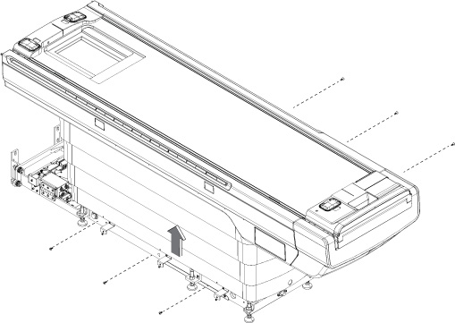
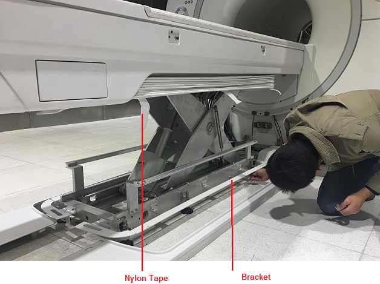
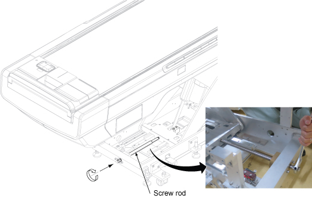
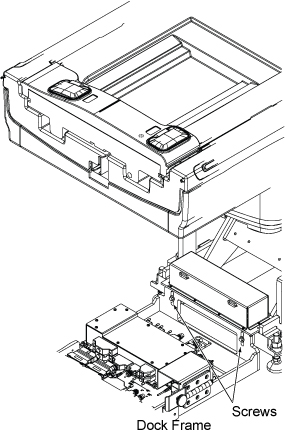
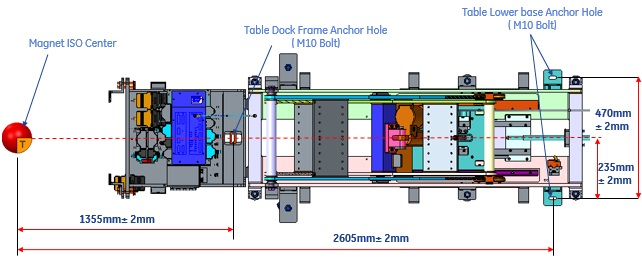
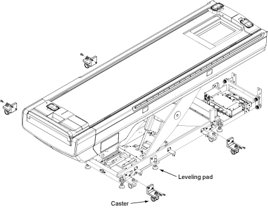
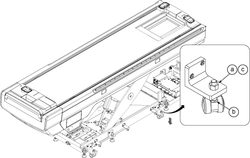

Disconnect all the cables connected to Patient Table, if necessary,
remove magnet covers.
Lift the table cover.
(For Telescopic Cover) Remove 6 screws for
telescopic cover bottom and move the cover up. Fix the telescopic
cover with masking tape.
Figure 1. Telescopic Cover

(For Bellows Cover) Remove the bellows cover
from the bracket and tighten it with six cable ties under the table.
Remove the bracket from the table base.
Figure 2. Lift Bellows Cover

Insert the screw rod and rotate it to clockwise till it engages
to carriage plate.
Figure 3. Screw Rod

Remove two screws fixing table and dock frame.
Figure 4. Remove two screws

Remove anchoring bolts.
Figure 5. Patient Table Anchoring Location

Install casters at 4 locations with two screws per each caster.
Note
In case casters cannot be installed because leveling pad
height is too low, turn the leveling pad by same rotation at the
6 locations and move the Table up. Record the number of rotation to
restore the Table at original height.
Leveling Pad
Number of rotation
Pad 1~ Pad 6
(same number of rotation)
Figure 6. Install casters

Adjust the Caster height.
Loosen the caster locking nut.
Bring up Table by rotating the caster nut till the leveling
pad becomes free.
Tighten the caster locking nut.
Perform the same procedure for the rest of casters.
Figure 7. Caster height adjustment

Move the Table outside of Magnet Room.
Topic ID: id_SL13503804-1345696
Restore Table to Magnet Room
Procedure
Move the table to the Magnet Room as it was installed.